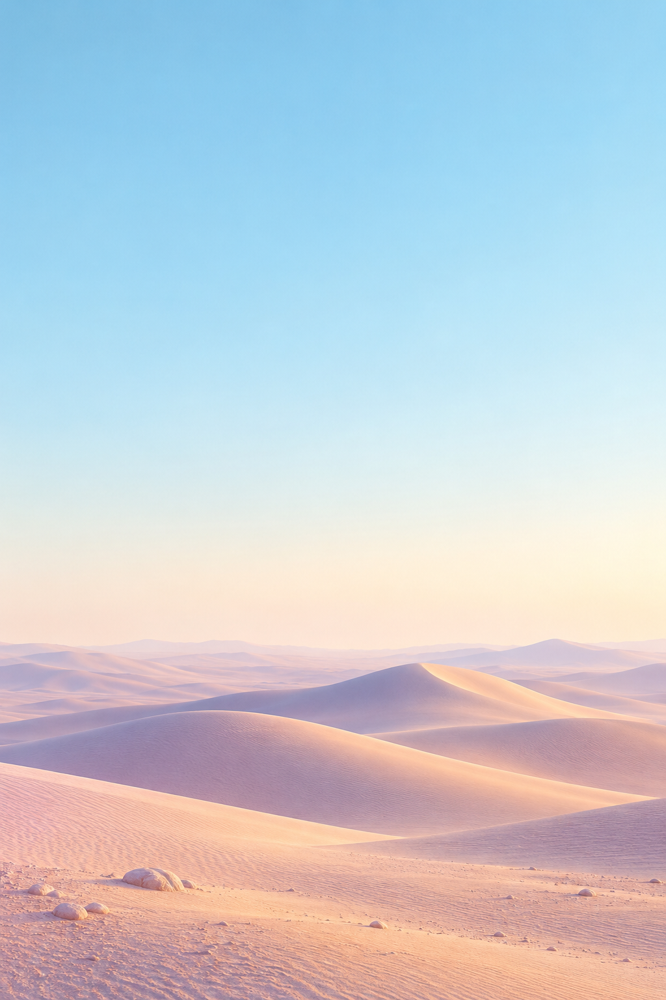

10:00▴▴ ▰
It's sunny
Weather Today
05 / WHITE SPACE
把天空留给天空。
一个温度，一张天气卡。先降低信息密度，让视线自然落在最重要的内容上；空出来的地方，本身就是布局的一部分。
9:41▴▴▴
留下五个主要信息块，让间距参与表达。
原片教学读数：14→5块、18→68%留白、10→34px最小间距，均非左侧App的源码实测。真实天气参考在教学前后保持静态。450ms结构演示为拟合；地点、日期、单位切换和小时详情为本地补写，使用静态示例数据，不连接实时天气或定位。